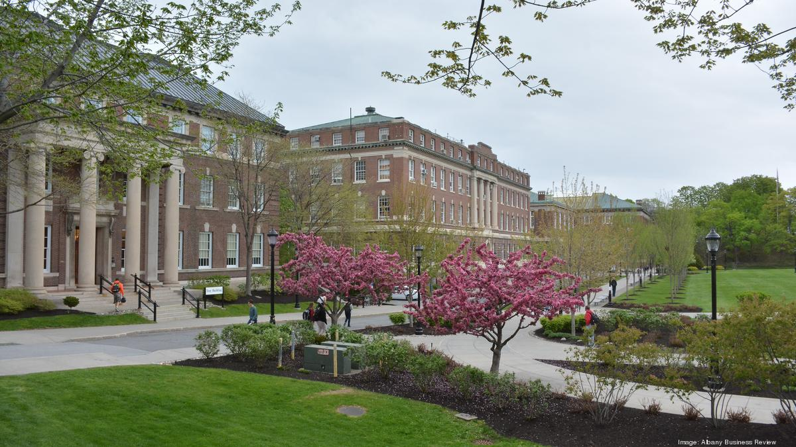
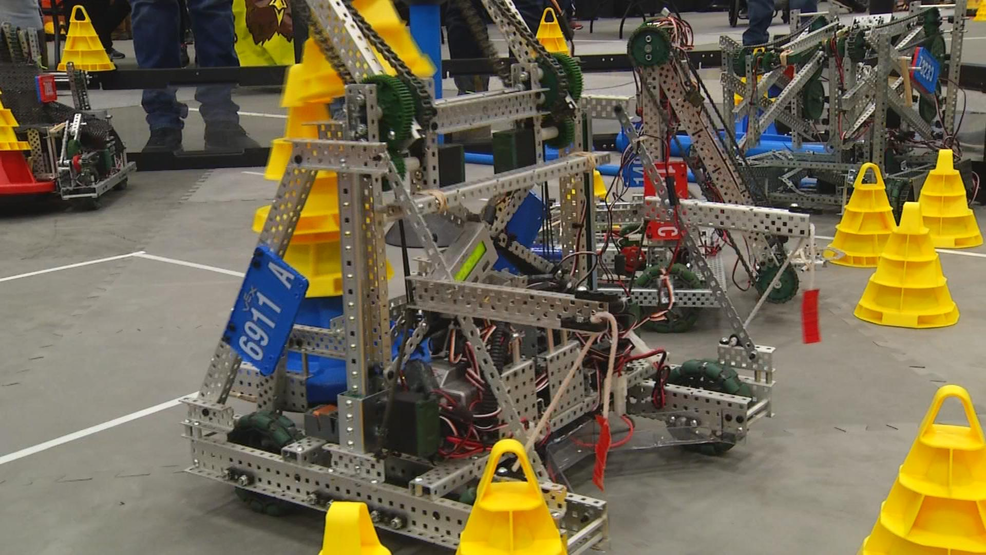
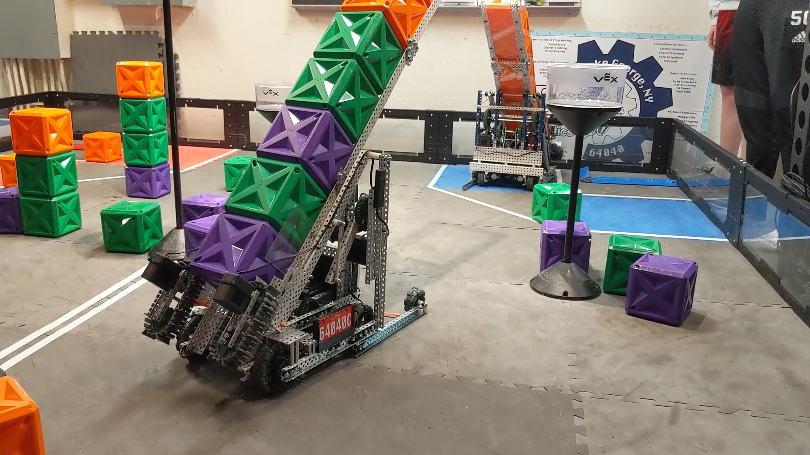

- C
- O
- D
- I
- N
- G
My Journey through Coding
Computer science has become one of the most important and fun experiences of my life, so much so that I am looking to build my career around this subject. I love the feeling of clicking the run button and finally having the code I've worked so long on finally succeed. I love how much problem-solving let's me get creative with my thoughts. I love how so many things become much simpler with code. I even love the moments of frustration where I need to fix a bug in the program because it makes the moment when things work out just that much more satisfying.

College Python Course
I took my first computer science course at the Rensselaer Polytechnic Institute(RPI) in 10th grade. It was one of the hardest classes I had ever taken, but it was also the class that made me fall in love with coding and what made me decide to pursue it as the subject of my career.

AP Computer Science
In my junior year of high school, I took AP Computer Science, which taught basic java. It was much easier to master by then since I already understood the mindset needed to solve problens using loops and other such techniques.

Robotics
Also in my junior year, I joined our school's newly founded robotics club as one of the main coders of the team as well as the writer for the engineering notebook documenting our club's process in making the robot. Though we did not go so far in the competition, it was a good learning experience. The next year, I became one of the three club heads.
Visiting Facebook
The summer before my senior year, I had the oppurtunity to visit Facebook in California, accompanied by my cousin who worked there, while I was staying with my brother for a week. The moment I entered, the environment was different from anything I had seen before. The meeting rooms, the people, and the atmosphere of the company really amazed me. Even the food tasted better there than normal.
Cornell Summer School
In the same summer, I attended Cornell Summer School for a class in robotics. I learned a lot of new things in that class and made a lot of new friends! For the first time in my life, I lived away from my parents in a new environment with a fresh start, and I enjoyed every moment of it.

States
In my final year of high school, my team and I managed to do well enough in the regional competition to land us a position in the New York State VEX Robotics Competition. It was an awesome experience with so many around me who shared the same mind for coding and building robots.